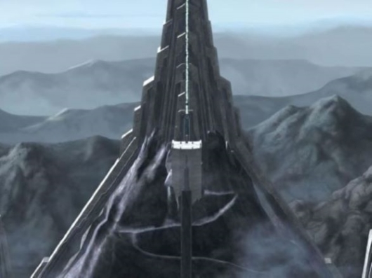

Opis: Cytadela Wieczności to jedno z najbardziej tajemniczych i niezwykłych miejsc w galaktyce, znajdujące się na planecie Mortis. Jest to miejsce, które istnieje poza tradycyjnym pojęciem czasu i przestrzeni. Cytadela, będąca siedzibą trzech potężnych istot – Ojca, Córki i Syna – odzwierciedla naturę Mocy w jej najczystszej formie. Ojciec utrzymuje równowagę między Córką, reprezentującą jasną stronę Mocy, a Synem, uosabiającym ciemną stronę.
Sama architektura Cytadeli jest niezwykle złożona i zmienna, jakby żyła w symbiozie z Mocą. Wewnątrz znajdują się komnaty i miejsca medytacyjne, które zdają się zmieniać w zależności od emocji lub intencji osób, które tam przebywają. Cytadela była świadkiem wielu dramatycznych wydarzeń, w tym konfliktu między Obi-Wanem Kenobim, Anakinem Skywalkerem i Ahsoką Tano a Synem, który próbował zwabić Anakina na ciemną stronę.
Znaczenie: Cytadela Wieczności symbolizuje esencję Mocy, ukazując zarówno jej piękno, jak i niebezpieczeństwa. Jest to miejsce, które pokazuje, że Moc to nie tylko energia do wykorzystania, ale także siła, która wpływa na losy całej galaktyki.
 ➡